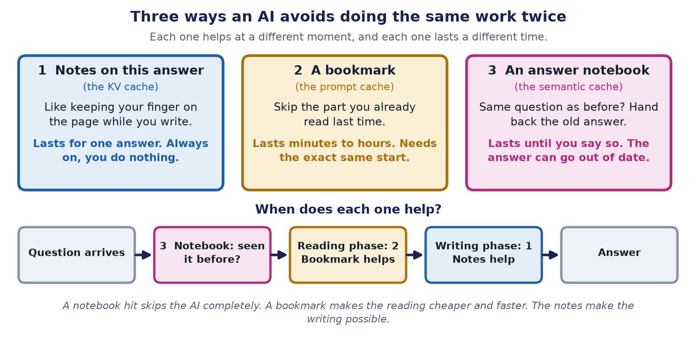

AI caching, explained simply: three ways an AI avoids doing the same work twice
First published on keshavaai.in

In one sentence: An AI can save time and money by remembering work it has already done. There are three kinds of memory, and each one helps at a different moment.
The big idea: do not do the same work twice
Imagine doing homework with a huge textbook. If you re-read the whole book for every question, you would be there all night. Smart students keep notes, use bookmarks, and remember the answers to questions they have met before.
AI systems do the same. Keeping something you already worked out, so you can use it again, is called caching (say "cashing").
First: how an AI writes an answer
An AI does not write a whole answer at once. It reads first. Then it writes one small piece at a time. A small piece is called a token. It is about three-quarters of a word.

- The reading phase. The AI reads everything you sent it, all at once. How long this takes decides how long you wait for the first word.
- The writing phase. The AI writes the answer one token at a time, looking back at everything before. This decides how fast the words appear.
Each kind of cache helps one of these phases, or skips both.
Memory 1: notes on this answer (the KV cache)
While writing, the AI keeps looking back at every earlier token. Instead of working it all out again for every new piece, it keeps notes about what it has already read. Think of keeping your finger on the page while you write a story.
These notes are called the KV cache. You do not have to switch them on. They last for one answer only. When the answer is finished, the notes are thrown away.
Memory 2: a bookmark (the prompt cache)
Many requests start the same way: the same rules, the same tools, the same long document. Why read them again every time? A prompt cache remembers that first part. Next time, the AI skips straight to the new part, like opening a book at your bookmark.
It has one big rule: the start must be exactly the same, letter for letter. If you put today's date at the very top, it changes every time, and the bookmark does not work. So put the things that never change first, and the things that change last.
1. The rules the AI must follow (never changes)
2. The tools it can use (never changes)
3. The long guide document (rarely changes)
4. The earlier chat messages (grows slowly)
5. The new question (always new, so it goes last)A bookmark saves money and the waiting time before the first word. It does not make the words appear faster once writing has started. It usually lasts from a few minutes to a few hours.
Memory 3: an answer notebook (the semantic cache)
Sometimes people ask nearly the same question again. "How do I reset my password?" and "I forgot my password, what now?" use different words but mean the same thing. A semantic cache keeps a notebook of past questions and answers. If a new question means the same as an old one, the system hands back the old answer without asking the AI at all. That is the cheapest and fastest of all.
The risk is that the old answer may be out of date, like last year's school timetable. So give each saved answer an expiry date. And never save answers that are private or change fast, such as "What is my account balance?"
Try it yourself
Move the sliders in the simulator. Watch which requests reuse the bookmark, and how much money that saves. Then tick the box about the changing time at the top, to see how easily a bookmark gets lost.
Interactive version, with step-by-step controls and a text version: https://keshavaai.in/explainers/prompt-cache
A worked example with numbers
This example is made up, to show the idea. A helper has instructions and documents that are 8,000 tokens long. Each question adds about 400 tokens. Someone asks 6 questions, 2 minutes apart.
- Without a bookmark, the AI reads 8,400 tokens, six times. That is 50,400 tokens of reading.
- With a bookmark, the first question costs a little extra, to set up the bookmark. After that, the long part is read at one-tenth of the price. The total comes to about 16,400 tokens of reading.
That is about two-thirds cheaper. The exact prices depend on the company, but the idea is the same.
Common mistakes
- Putting something that changes, like the time, at the top of the prompt. The bookmark breaks every time.
- Saving answers that go out of date, or that hold private information.
- Expecting a bookmark to make writing faster. It only helps the reading.
- Forgetting that a bookmark runs out. If nobody asks for a while, it is thrown away.
The short version
- The notes help the AI write one answer. They are automatic.
- A bookmark saves time and money when requests start the same way.
- An answer notebook skips the AI completely, but the answer can get old.
The limits of this advice
- Prices, time limits and minimum sizes differ by company and change often. Check the company's own page before you rely on a number.
- The worked example is made up. Your savings depend on how often requests start the same way.
- An answer notebook can return an old or wrong answer, so it needs expiry dates and careful choices about what to save.
Words explained
- Token: a small piece of text, about three-quarters of a word.
- Prompt: what you send to the AI: your question, plus any rules and documents.
- Cache / caching: keeping something you already worked out so you can use it again.
- Reading phase (prefill): the AI reads everything you sent.
- Writing phase (decode): the AI writes the answer one token at a time.
- KV cache: the notes the AI keeps while writing one answer.
- Prompt cache (also called prefix cache): the bookmark for a start that repeats.
- Semantic cache: the notebook of old questions and answers.
- Expiry time (TTL): how long a saved item may be used before it is thrown away.
For engineers
This section has the exact details. Everything above is the simple version of it.
The technical names
Prefill reads the whole prompt in parallel and is compute-bound; it decides time-to-first-token. Decode generates tokens one at a time and is memory-bandwidth-bound; it decides tokens per second. The KV cache stores each token's key and value vectors so attention is not recomputed at every step. It grows with context length, which is why quantizing it (INT8 or INT4) is a lever at scale. A prompt (prefix) cache reuses the KV computation for an identical prefix across requests. In vLLM, for example, the cache is keyed on a hash of each block of tokens together with the tokens before it, so requests sharing a prefix share the stored blocks. A semantic cache sits in front of the model and matches on embedding similarity; it skips inference on a hit.

What the companies document (checked 14 October 2026)
- Anthropic. Cache lifetime: 5 minutes by default, refreshed on use; 1 hour optional. Minimum prompt: 512 to 4,096 tokens, depending on model. Cached input price: Reads at 0.1x the base input price (0.05x or 0.025x on some newer models); writes at 1.25x (5 minutes) or 2x (1 hour).
- OpenAI. Cache lifetime: Newest models: at least 30 minutes. Earlier models: in-memory, typically 5 to 10 minutes and up to 1 hour, or 24 hours. Minimum prompt: 1,024 tokens on the newest models; varies on earlier ones. Cached input price: Cached input discounted up to 95%; on the newest models, writes at 1.25x and reads at 0.1x.
- Google Gemini. Cache lifetime: Implicit caching on by default for Gemini 2.5 and newer; lifetime not stated on the page. Minimum prompt: 2,048 to 4,096 tokens, depending on model. Cached input price: Savings passed on automatically; no percentage stated.
Sources: Anthropic prompt caching, OpenAI prompt caching, Google Gemini caching, vLLM automatic prefix caching. Prices and limits change often; check the provider's page before you rely on a number. Neither Anthropic's nor OpenAI's page gives a general latency percentage, so treat any quoted latency saving as workload-specific until you measure it.
The write premium, as arithmetic
Take a provider that charges 1.25x to write a 5-minute cache entry and 0.1x to read it (the Anthropic multipliers above), and count the cost of the shared prefix in units of its normal input price. Used once, caching costs 1.25 instead of 1.0, a small loss. Used twice, it costs 1.25 + 0.1 = 1.35 instead of 2.0. Used ten times within the window, it costs 1.25 + 9 x 0.1 = 2.15 instead of 10. This is arithmetic from the published multipliers, not a benchmark.
Cheat sheet
- KV cache. Phase it helps: Decode. What it saves: Recomputing attention at every step. Turn it on when: Always on; nothing to configure.
- Prompt / prefix caching. Phase it helps: Prefill. What it saves: Cost and time-to-first-token. Turn it on when: Prefixes repeat across requests, within the cache window.
- Semantic caching. Phase it helps: Both (skipped entirely). What it saves: Cost and total latency. Turn it on when: Genuinely repeated questions, and some staleness is tolerable.
- Quantization (not a cache). Phase it helps: Both, through memory footprint. What it saves: Memory, and some latency. Turn it on when: Almost always worth evaluating at scale.
- FlashAttention (not a cache). Phase it helps: Both, through memory reads. What it saves: Latency. Turn it on when: Already standard in most modern serving stacks.
- Speculative decoding (not a cache). Phase it helps: Decode. What it saves: Tokens per second. Turn it on when: High-volume, decode-bound workloads.
Keeping semantic caches honest
A semantic cache lives until a TTL, an eviction rule or an invalidation event removes the entry, so you set the policy. Do not cache answers that contain personal data or change quickly. See cost-aware testing for measuring cache hit rate, cost per successful task and answer freshness.
Read it on the website, with the interactive version and sources: https://keshavaai.in/journal/llm-caching-untangled